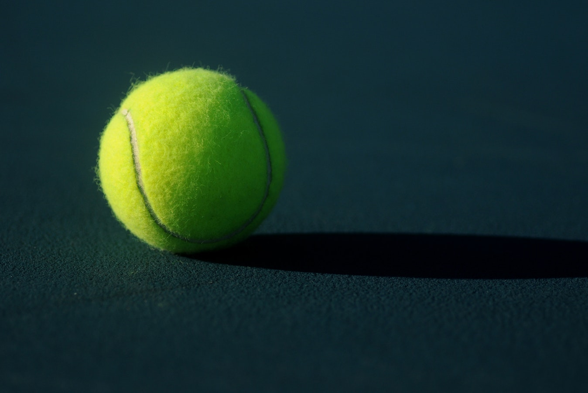

Hypertext Markup Language (HTML) is the standard markup language for creating web pages and web applications.Web browsers receive HTML documents from a web server or from local storage and render them into multimedia web pages. HTML describes the structure of a web page semantically and originally included cues for the appearance of the document. 
테니스(영어: tennis)는 두 명의 선수(단식) 또는 각각 두 명의 선수로 이루어진 두 팀(복식)이 겨루는 라켓 스포츠의 한 종류이다. 선수들이 줄이 매어진 라켓을 이용해 속이 비고 표면이 펠트로 이루어진 고무 재질의 테니스공을 쳐서 네트 너머 상대방의 코트로 계속하여 넘겨서, 어느 한 쪽이 공이 두 번 바운드 되기 전에 치지 못 하거나 친 공이 네트를 넘지 못 했을 때, 혹은 친 공이 상대방 코트에 들어가지 못 했을 때 그 실패한 선수의 상대방이 점수를 따는 방식으로 진행된다. 경기의 종류는 선수 구성에 따라 단식과 복식, 혼합복식으로 나뉜다. 과거에는 소프트 테니스(연식 정구)와 함께 하드 테니스(경식 정구)라고 불리기도 했다.